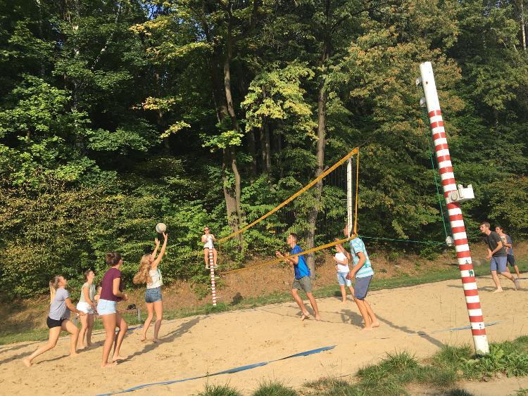

Gazeta ZSO nr II w Opolu
Numer 1/2016
Tydzień w Głuchołazach
 Głuchołazy są idealną miejscowością aby zintegrować się z nową klasą i aktywnie spędzić czas – uważa Julia Rossa. – O tym że wyjazd był udany świadczy fakt, że znalazły się osoby które nie bardzo chciały wracać – dodaje Julia Nicze. Do tradycji Dwójki należy to, że we wrześniu pierwszaki spędzają tydzień w Głuchołazach i integrują się. Tak również było i w tym roku, tym razem szczególnie dopisała piękna pogoda. Dzięki temu chętni mogli nawet popływać w basenie, bardzo udała się gra miejska rozgrywana na ulicach Głuchołaz, biegi terenowe, ognisko czy wycieczka w Góry Opawskie. - Po kilku godzinach chodzenia i oglądania pięknych każdy z nas był bardzo zmęczony, że ucieszyliśmy się, że kolejnym punktem naszego programu dnia są zajęcia z pedagogiem i psychologiem szkolnym, niewymagające od nas chodzenia i biegania. Dzięki nim mogliśmy lepiej poznać siebie nawzajem, ale i dobrze się bawić podczas gier – opowiada Julia Marcinów. – Nie mogliśmy się nudzić, bardzo podobało mi się strzelanie z łuku – mówi Kamil Juśkiewicz. Nie wszystkim jednak wszystko się podobało. - Nie mieliśmy wolnego czasu i przez to byłam zmęczona – uważa Marta Gawor. – Dziennie, nie licząc spania, spędzaliśmy ok. 2 godzin w pokojach, definitywnie za mało – uzupełnia Helena Szum. – Po każdym dniu byłam wykończona. Dużo się działo. Według Iwony Działowskiej to był naprawdę dobry początek roku szkolnego. – Ośrodek Banderoza to zdecydowanie nie 5-cio gwiazdkowy hotel, ale jedno można o nim powiedzieć: jednoczy ludzi - podsumowuje wyjazd Julia Marcinów.
ul. Pułaskiego 3
45-048 Opole
tel. 077 45 422 86
fax 077 02 18 87
e-mail:
bez.tytulu@o2.pl
Ola Orłowska
DTP
Michał Woś
Opiekun
mgr Lucyna Rudnik
Ola Orłowska, Ania Cichy, Dagmara Cioska, Julia Nowicka, Julia Marcinów, Hania Szarzewicz, Michał Woś, Bartek Lipnicki, Jonasz Mularz, Paweł Kubacki, Mateusz Pietruszyński, Mateusz Orlik